一个把天才讲成人话的科普系列
15 位真正改变了世界的头脑，从哥白尼到霍金，正好串起近 550 年科学如何重塑人类世界。每人一个独立站点：一条时间线串起一生，核心成就拆成一篇篇短文，难词点开就有人话解释，还能亲手拖一拖实验。下面这张桌面上，点谁进谁。
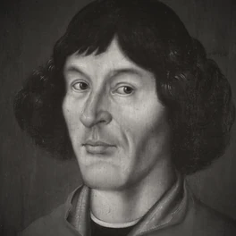
哥白尼 1473 – 1543 用「日心说」把地球请出宇宙中心，掀起科学革命的第一声惊雷。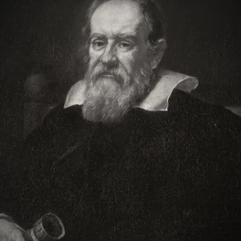
伽利略 1564 – 1642 用望远镜把天空拉到眼前，用斜面与摆锤重新定义「运动」，近代实验科学之父。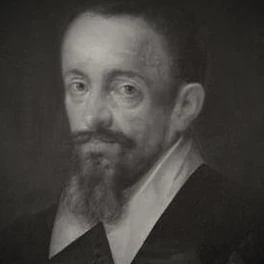
开普勒 1571 – 1630 行星运动三大定律，用椭圆轨道把日心说变成可精确计算的模型。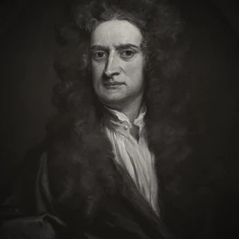
牛顿 1643 – 1727 三大力学定律与万有引力，第一次把天体与地面连成同一种规律；还发明了微积分。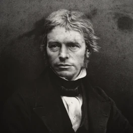
法拉第 1791 – 1867 发现电磁感应、造出第一台发电机，提出「场」与力线——今天点亮世界的电，源头在他手上。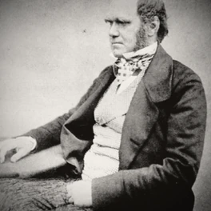
达尔文 1809 – 1882 进化论与「物竞天择」，重新解释所有生命的来处与彼此的关联。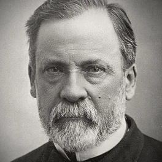
巴斯德 1822 – 1895 巴氏杀菌与疫苗，微生物学奠基，实打实拯救了无数人的生命。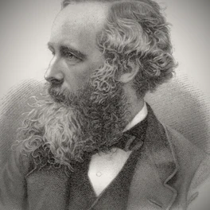
麦克斯韦 1831 – 1879 用一组方程统一电、磁与光，现代通信的全部根基都从这里长出。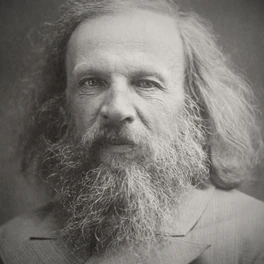
门捷列夫 1834 – 1907 元素周期表，把混乱的化学元素排成可被预言的秩序。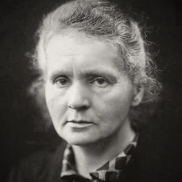
居里夫人 1867 – 1934 发现放射性元素钋与镭，两获诺贝尔奖，亲手推开原子时代的大门。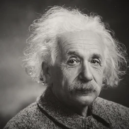
爱因斯坦 1879 – 1955 相对论重写时间、光与引力，E=mc² 成为史上最有名的等式。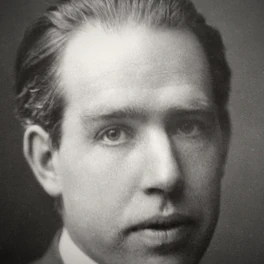
玻尔 1885 – 1962 原子模型与量子跃迁，为现代量子力学奠定基石。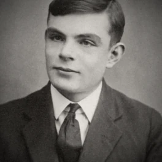
图灵 1912 – 1954 图灵机与可计算性，计算机科学与人工智能的思想源头。 费曼 1918 – 1988 路径积分与费曼图重塑量子力学，用一杯冰水找出挑战者号事故真相，也是最会讲物理的人。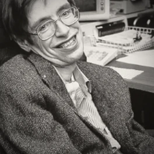
霍金 1942 – 2018 黑洞辐射与宇宙学普及，把最前沿的时空之谜讲给全世界听。悬停任意一位，看一句话简介；点开进入 TA 的完整站点。
每个科学家站点都遵循同一套结构，方便你一路读下来、也方便老师直接拿去课堂用。
从出生到谢幕，哪一年发生了什么、为什么重要，点开年份就能看。
光学、数学、物理……每个核心领域单独成篇，配图、配通俗解释，不怕看不懂。
全站带虚线下划线的词都能点，弹窗给“人话”解释；还有完整术语词典可查。
网页里直接拖一拖、调一调的小演示，把抽象规律变成你能操控的东西。
内容依据公开史料编写，图文可截图引用，适合课堂与自学。
15 位科学家各有一个结构统一的子站点，从上面那张桌面点进去就是了。
名单按出生年份排列（就是上面那张桌面从左到右、从上到下的顺序），涵盖天文、物理、化学、生命、医学、计算六大领域；从哥白尼到霍金，正好串起近 550 年科学如何重塑人类世界。后续仍可按需增删。
每位科学家是独立子站点，共用一套引擎（术语弹窗 / 时间轴 / Canvas 实验），内容各自撰写并逐一通过静态校验与浏览器验证。
根目录做系列总览入口，15 位一屏可达，并可按姓名、领域或关键词检索。
子站作为栏目统一部署为一个站点，共享样式与脚本，结构统一、便于持续扩展。
15 位科学家的肖像均取自公有领域或 CC0 授权的历史照片与油画，在展示层统一为暖灰影调，以便并排时像一套。